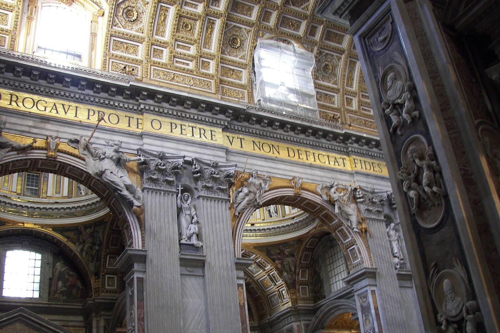
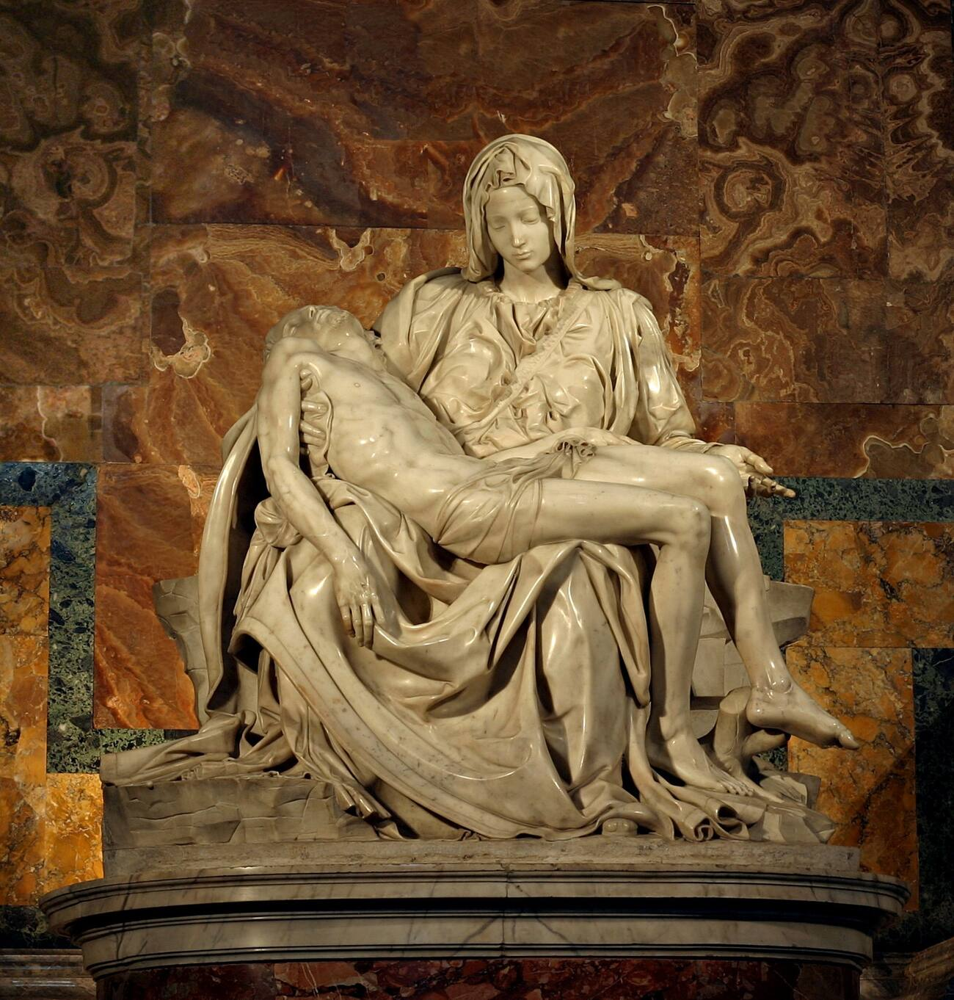
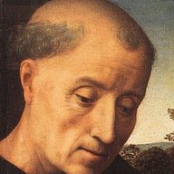
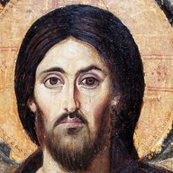
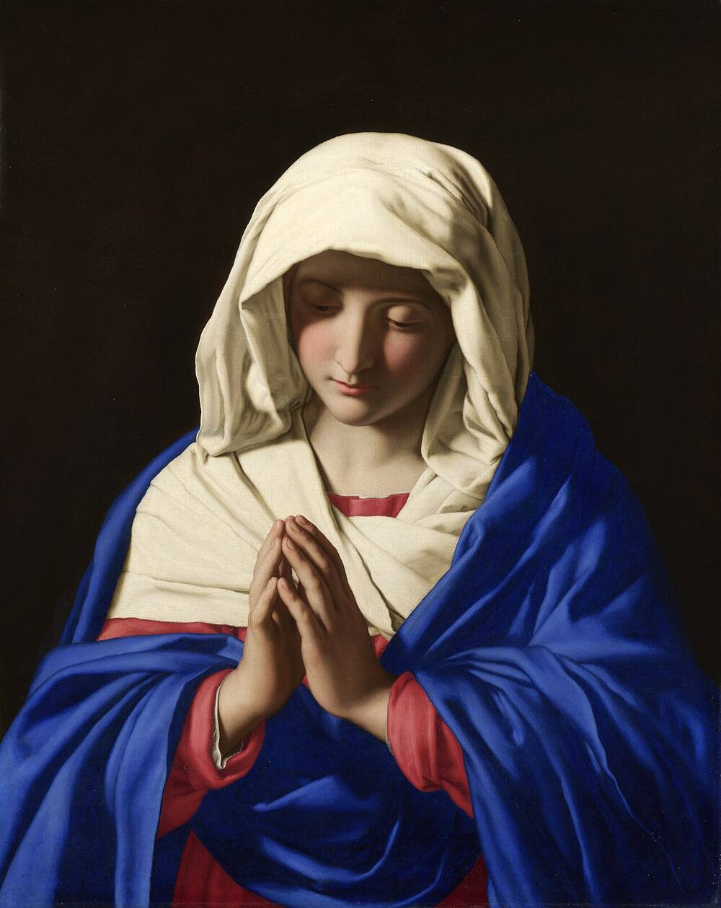

For Catholics
Catholic? Welcome home.
St. Peter's Basilica, Rome, Wknight94 · CC BY-SA 3.0

Do you feel called to go deeper in prayer?
Thanks be to God. That call is his, and he will help you answer it.
A small “maybe” is often how it starts. Let's take one step together.
That's an honest answer. Read on, and see if something stirs.
The Mass is the heart of the Church's prayer. The Liturgy of the Hours, also called the Divine Office, is the round of prayer the Church keeps at set times through the day. It carries the praise of the Mass out from the altar into every hour.
In the Church's own words, the Liturgy of the Hours “extends to the different hours of the day the praise and prayer, the memorial of the mysteries of salvation and the foretaste of heavenly glory, which are offered us in the eucharistic mystery.” The Catechism calls it “like an extension of the Eucharistic celebration.”
Join the prayer of Christ himself
When the monks sing the Psalms, they are not praying alone. The Second Vatican Council taught that Christ “joins the entire community of mankind to Himself, associating it with His own singing of this canticle of divine praise.” Through his Church, he goes on “praising the Lord and interceding for the salvation of the whole world,” not only at Mass “but also in other ways, especially by praying the divine office.”
That is what happens in this church several times every day: Christ's own prayer for the whole world, carried on by his Body. The Office adds nothing to his saving work or to the Mass. It stretches that praise across the day and lets us share in it, so that “the whole course of the day and night is made holy by the praises of God.”
And it isn't only for monks. The Catechism says the Liturgy of the Hours “is intended to become the prayer of the whole People of God,” and that “the laity, too, are encouraged to recite the divine office.”
You are welcome to pray with us. Come for one hour, or come back for many. See the times.


Have you prayed the Liturgy of the Hours before?
Then this is a beautiful place to begin. You don't need a book or any experience. Just come.
Praying it with a choir is different from praying it alone. Come hear it sung.
Then you're already praying with us. Come and pray it with us in person. A note: our monastic book is arranged differently from the four-volume breviary, and it uses the older psalm numbers.
Do the Psalms ever feel dry or hard to pray?
You're not alone. Monks know that feeling too. Keep reading: what helped me is just below.
Everyone has dry days, monks included. The way of praying below has helped me on mine.
Thanks be to God. You might still enjoy a new way of hearing them.
A few short explanations
Open any that help. The ones marked “For you” match your answers.
Why the Psalms are special
The Catechism calls the Psalter “the masterwork of prayer in the Old Testament.” It's something like the whole Bible in one book. Saint Athanasius, Doctor of the Church, wrote that the Book of Psalms is “like a garden” holding things from every other part of Scripture, and that it “sets them to music.”
The Psalms also stand like a bridge between the two Testaments. Jesus said, “All things which are written in the law of Moses, the prophets, and the psalms concerning me must be fulfilled” (Luke 24:44). The Catechism describes both ends of that bridge. In the New Testament, God's word “displays its power in a most wonderful way” (CCC 124). The Old Testament is “a wonderful treasury of prayers” (CCC 122), and reading it in the light of Christ “discloses the inexhaustible content of the Old Testament” (CCC 129). As the old saying goes, “the New Testament lies hidden in the Old and the Old Testament is unveiled in the New” (CCC 129).
Pope Benedict XVI put it beautifully: in Christ, “every Psalm acquires a new light … and the Psalter can shine out in its full infinite richness.” He also said that whoever prays the Psalms “speaks to God using the very words that God has given to us.”
And the Psalms are poetry. A poem packs many meanings into a few words; you can pray the same psalm for fifty years and still find something new. Hebrew poetry likes to speak in pairs, the second line echoing and deepening the first. That's part of why the Psalms are so natural to sing back and forth in choir.
The hours we pray here
Our community prays the monastic form of the Office, following the Rule of Saint Benedict. The hours you can join are:
- Matins and Lauds, prayed together early in the morning. Matins is the long night office of psalms and readings; Lauds is morning praise, whose high point is the Canticle of Zechariah (the Benedictus).
- Sext, at midday.
- Vespers, evening prayer, with the Magnificat.
- Compline, night prayer before sleep, ending with an antiphon to Our Lady. (On Wednesdays and Sundays, the monks pray Compline privately.)
How our choir sings
The monks stand in choir, facing each other across the aisle. Two chanters, a lead and a second, stand and give the note, and together they sing the first verse. Then the whole community answers with the next verse, back and forth through the psalm. Our psalms are sung in English, from the Grail translation.
Saint Benedict asks his monks to sing the psalms so that “our mind may be in harmony with our voice.” That's the whole art of it.
What to expect when you come
- Come in quietly and sit in the pews.
- Please silence your phone.
- Sing along, or simply listen and pray.
- Oblates of the abbey may pray in choir with the monks. About oblates
How to follow along in our book
Our book uses the older numbering of the psalms (from the Greek and Latin Bibles), so most psalm numbers are one lower than in a modern Bible. Our step-by-step guide shows how to find your place. How to follow along →
Do you notice the Psalm at Mass?
Then you already pray the Psalms more often than you might think.
It's easy to miss between the readings. Listen for it next Sunday.
It's the one the cantor sings after the first reading, with a refrain you sing back. Now you'll hear it everywhere.
The Church's own songbook
You hear a psalm at every Mass. After the first reading comes the Responsorial Psalm, which the Church calls “an integral part of the Liturgy of the Word” (General Instruction of the Roman Missal, 61). Many entrance and communion antiphons are psalm verses too.
The Catechism says, “The Psalter is the book in which the Word of God becomes man's prayer” (CCC 2587), and “Prayed and fulfilled in Christ, the Psalms are an essential and permanent element of the prayer of the Church” (CCC 2597).
And the Holy Spirit chose poetry on purpose. Vatican II teaches that God's truth “is set forth and expressed differently in texts which are variously historical, prophetic, poetic” (Dei Verbum 12). The Church honors beauty because it points to God. Art at its best “bears a certain likeness to God's activity in what he has created” (CCC 2501). At the close of the Council, Pope St. Paul VI told the world's poets and artists: “This world in which we live needs beauty in order not to sink into despair.”
In choir, the psalm you answer at Sunday Mass becomes the prayer of the whole day.
Pick up the phone
I'm one of the monks here, and I've found a way of praying the Psalms that set my prayer on fire. It isn't new.
Picture an old telephone in a museum, behind a velvet rope. Everyone assumes it's only for looking at. But pick it up, and someone answers. The Catechism says Christianity is not a “religion of the book.” It is the religion of the Word of God, “not a written and mute word, but the Word which is incarnate and living.” And Vatican II teaches that “in the sacred books, the Father who is in heaven meets His children with great love and speaks with them.”
So in choir, as the chanters sing one verse and the community answers with the next, I hear one verse as my own voice and the next as God answering me. Sometimes the phone even rings on its own, in the middle of the day.
The storeroom was full long before I came. Saint Augustine heard “the whole Christ” speaking in the Psalms: sometimes Christ our Head, sometimes we his Body. Cassian taught monks to pray the Psalms until they felt they were writing them themselves. Saint Teresa of Ávila called prayer a sharing between friends. Saint Ignatius taught a colloquy: speaking to God “as one friend speaks to another.”
Two rules keep it honest. I never change the words of the psalm. And the answer I hear is a meditation, clearly my own, not a new translation and not a claim about what the psalmist meant. The paired lines of Hebrew poetry simply invite me to listen for a reply.
A short example
How can I repay the Lord
for his goodness to me?

I prayLord, you've given me so much. What could I ever give you back?The cup of salvation I will raise;
I will call on the Lord’s name.

I hear God sayJust lift the cup I'm handing you, and call me by name.I prayReally? That's all?
I hear God sayThat's all, my son.
Every call is different, sorrowful one day and joyful the next.


Come and pray with us
Come and add your voice to Christ's prayer for the whole world. See the times.
If you want to go further still, consider becoming an oblate of Saint Bernard Abbey. Oblates follow the Rule of Saint Benedict in their own homes and work. They receive a year of formation, spiritual direction, and monthly conferences, and they may pray in choir with the monks. All of it is free.